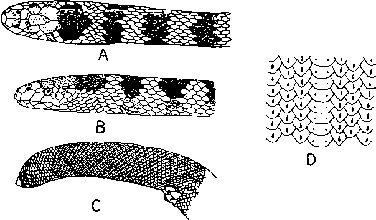

|
Digitized Inventory of Animal Resources: Reptilia ( Snakes ) Principal Investigator: Dr. R. J. B Alfred, Co-Investigator: Dr. Rama Krishna, Contributed by:
Dr. R.C.Sharma |
Hydrophis cyanocinctus (Daudin 1803)
Taxonomic
Details
----- Scientific Name
----- Classification
----- Synonyms
----- Common Names
Other
Biological Details
----- Habit and
Habitat
----- Distribution
---------- Extent of
Occurrence
---------- Area of occurrence
---------- Altitude
---------- Population
-----
Conservation Status
-----
Diagnostic
Features
-----
Breeding system
Miscellaneous
Information
Literature
Genus . Hydrophis Latreille 1802
This genus includes marine or brackish water snakes showing plenty of variations and its many species are subject to the evolutionary changes. The main generic characters are : Tail is laterally compressed; nostrils are dorsal in position, pierced in nasal shields, which are in contact with one another; eyes are small with round pupil; poison fangs are short and fixed, followed after an interval by 1-18 maxillary teeth; loreal shield is not present; ventral shields are small, but quite distinct. The genus comprises about 22 species distributed from Persian gulf to the Idzu Sea of Japan; coast of Tasmania in the south; across the Pacific ocean to the Gilburt Islands. About 9 species are available from India.
Scientific Name : Hydrophis cyanocinctus (Daudin 1803)
Family :
Hydrophiidae
Classification:
Genus . Hydrophis Latreille 1802
Synonyms:
Common Names: annulated
sea snake
HABIT & HABITAT Found in shallow, muddy, mangrove swamps, these snakes can crawl on land easily and an adult can lift its head above the ground. They are piscivorous in habit. This is a most dangerous species and bite can be proved fatal.
Distribution:
Altitude:
Conservation status: Fairly Common
Length : This snake is with an elongated body reaches to a length of about 1630 mm. in males, 2020 mm. in females;
Body : body is not slender anteriorly, compressed posteriorly, the greatest diameter in the adult being from 2 to 2.5 times that of the neck; eyes are comparatively smaller in adults. Hemipenis is forked near the tip, and bears spines everywhere on the penis except near the basal portion, where these are transformed into the longitudinal folds; large number of spines are present on the edges of the sulcus.
Scales : 25-35 scale rows are present on the neck, 37-47, on the thickest part of the body (increase 8-14), the scales are imbricate throughout, generally with a central keel, which may be broken up into a series of two or three tubercles; ventral shields are 290-390, which are distinct throughout, anteriorly about twice as broad as the adjoining dorsal scales, posteriorly a little less; preanal shields are much enlarged;
Colouration : Dorsal colouration is dirty white, pale-greenish or yellow, with 48-67 sooty cross bands, central portions of which generally enclose lighter scales, bands widest on middorsal aspect, narrower on lateral aspects; in certain individuals these bands encircle the body, in others the midventral region remains clear or marked with longitudinal black stripe; on dorsum the crossbands are wider than the interspaces between them; tail colouration is some what darker than body, with 6-9 black bands; head in juveniles is blackish, with a yellow curved mark on the crown, in adult the head is olive, reddish or dull yellow, with back mottling in most individuals; chin and throat are dark gray.
Breeding Biology : Back to Top

Hydrophis cyanocinctus Daudin A.Dorsal
view of head and body B. Lateral view of head and body C. Tail D. Belly Scales